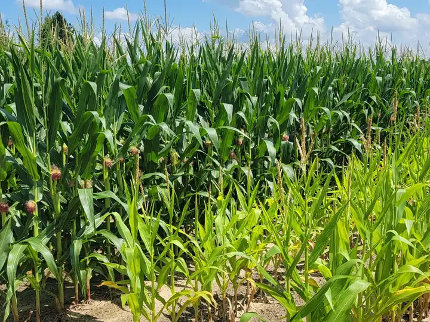

Amrinder Jakhar · Ph.D. candidate, Crop and Soil Sciences, University of Georgia · aj01359@uga.edu · amrinderjakhar.com
Research
My Ph.D. is on nitrogen management and crop sensing in Georgia corn. My M.S. was on soil amendments and water quality.



Sensor-based nitrogen management
Using canopy sensors to set side-dress nitrogen rates in irrigated corn.
- Corn
- Nitrogen
- On-farm trials
- Meta-analysis
- Six site-years of irrigated corn trials across Georgia (Tifton, Midville, Watkinsville)
- Side-dress timing, at-planting rate and sensor prescriptions against uniform-rate controls
- Agronomic and economic optimum N rates, nitrogen use efficiency and partial profit
- Global meta-analysis: 235 paired comparisons from 25 studies in nine countries, with an economic sensitivity analysis across six nitrogen-to-maize price scenarios
Remote sensing
Comparing proximal canopy sensors, UAV multispectral and satellite imagery over the same plots.
- UAV
- Satellite
- LiDAR
- Vegetation indices
- Proximal active sensors (Crop Circle, GreenSeeker), MicaSense UAV multispectral, PlanetScope
- Canopy cover and soil background explain why platforms disagree (manuscript in revision)
- Vegetation-index and normalization choices for in-season N prescriptions
- UAV LiDAR in cotton: flight settings, plant height and yield prediction (co-author)
Machine learning
Yield prediction and image models built from field, weather and sensor data.
- XGBoost
- Random forest
- XAI
- R & Python
- Gradient boosting (XGBoost) and random forests with tidymodels resampling and tuning
- Explainable AI for peanut yield and grade prediction (co-author; Computers and Electronics in Agriculture, 2026)
- Within-field cotton yield prediction and model generalizability (co-author)
- Random forest / XGBoost soil-pixel removal from UAV imagery; YOLO kernel counting (class project)
- Open lesson code: gradient boosting with XGBoost and tidymodels
Soil and water quality
My M.S. work on biochar and gypsum and on nutrient losses in Mississippi Delta soils.
- Biochar
- Gypsum
- Nutrient leaching
- Mississippi Delta
- Sugarcane biochar and FGD gypsum in rainfed Mississippi Delta cotton and soybean
- Soil solution sampled with suction-cup lysimeters at two depths to track nutrient movement
- Nutrients by ion chromatography, Lachat flow injection and ICP-OES
- Bulk density, infiltration, aggregate stability and soil carbon responses
In the field
All photos

Field sites
Replicated corn nitrogen trials at UGA research farms in Tifton (Ponder and Rigdon Farms), Midville and Watkinsville (Iron Horse Farm), plus on-farm trials with Georgia growers. M.S. field work in the Mississippi Delta.